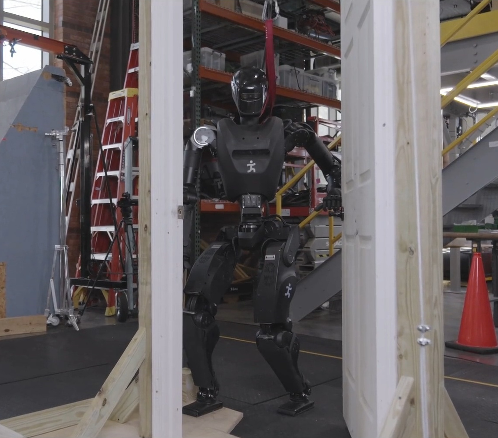
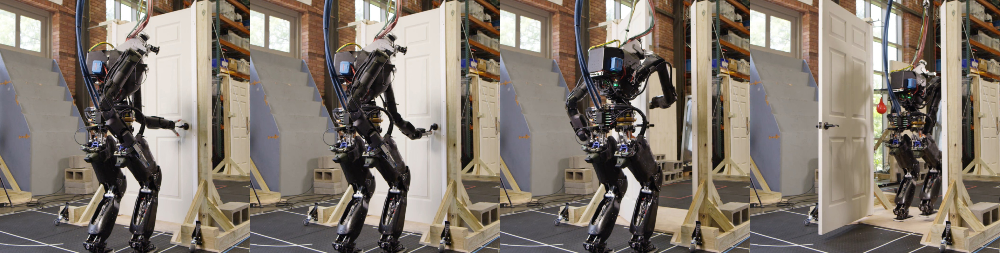
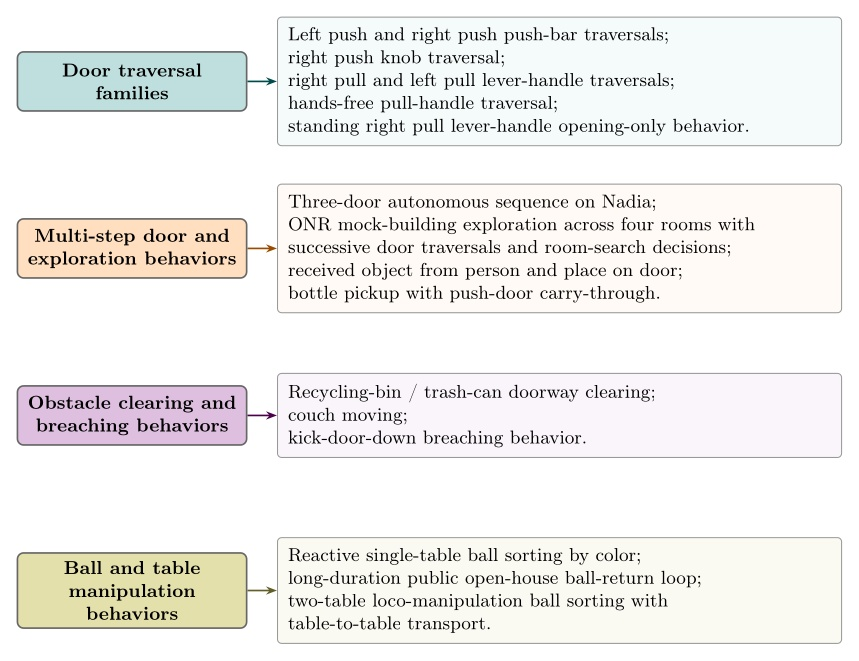
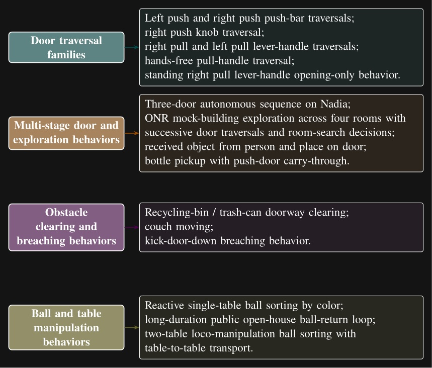

Introduction
There is tremendous value in humanoid robots taking on the dull, dirty, and dangerous work in spaces built for humans. However, a useful system must coordinate locomotion, whole body motion, perception, contact, and operator supervision. It must also support adaptation to new tasks. This chapter introduces the problem addressed by this dissertation and situates the proposed behavior architecture in the relevant literature.
The central claim of this thesis is that our behavior architecture enables fast, resilient, and adaptive humanoid robot behaviors. Different architectural choices affect how quickly a behavior executes, how robustly it tolerates task variation and disturbance, and how much effort is required to adapt an existing behavior to a new variant. The work therefore focuses on the runtime structure that makes the task faster, more resilient, and easier to modify than prior versions. In Building our Behavior Architecture, we tell the story of how we arrived at our current design choices.
This thesis demonstrates its relevance through performant real-robot demos on a variety of humanoid robot platforms, including IHMC’s recently developed Alex, a fully-electric humanoid robot with 29 degrees of freedom, as shown in 1. Alex uses the Psyonic Ability Hands, which are anthropomorphic 5-finger hands with 6 degrees of freedom each. It also perceives the world on-board, using just two stereo color cameras in the head with a human-like interpupillary distance.
We have run our system with several humanoid robots over the years, including the Boston Dynamics DARPA Robotics Challenge Atlas, NASA’s Valkyrie, IHMC and Boardwalk Robotics’ Nadia, Unitree’s H1-2, and IHMC’s Alex. This reflects the generality of our approach: it can run on a variety of humanoid robots. We describe the prerequisites in more detail in Usage Guide.

Problem Statement and Scope
This dissertation addresses the problem of local robot behavior authoring and execution for humanoid loco-manipulation tasks. The specific setting considered here is a robot operating in human scale environments, where it must walk, reach, manipulate objects, perceive doors and tables, and respond to operator input without relying on external tracking infrastructure. The scope is centered on a robot local behavior system in which you can compose, edit, and retarget behaviors.
The work presented here focuses on a behavior architecture that unifies task execution, authorable perception, and operator-robot teaming. In this architecture, behaviors are authored as reusable structures that can be executed on the robot and inspected and modified at runtime. This design can improve task speed, robustness under variation, and the time required to adapt a behavior to a new task variant such as a door or station. In Usage Guide, we provide a guide on composing and editing humanoid robot loco-manipulation behaviors using our system.
We compare our system to prior versions over a 10-year development period and to published results in the literature. However, we do not experimentally reproduce results from the literature. We also do not experimentally evaluate off-the-shelf alternatives such as MoveIt 2, MoveIt Pro 7, BehaviorTree.CPP 4, and Groot 5, 6.
Research Questions
This scope can be defined more formally by asking three research questions:
-
What concrete behavior architecture is sufficient to enable fast and robust humanoid loco-manipulation on real doors, and why are nearby alternatives insufficient?
-
How does this architecture compare with prior IHMC baselines and reported reinforcement learning door systems on overlapping metrics such as traversal time, reliability, and task variation coverage?
-
How does runtime-editable behavior structure change the time and sequence of steps required for an expert operator to adapt an existing behavior to a new door or task variant?
Research Hypotheses
To answer these questions, we establish the following research hypotheses, which are essentially the characteristics of the architecture we committed to building.
-
Robot-local execution with synchronized UI state, concurrent action layering, reactive tree logic, and behavior-time semantic perception yield door behaviors that are faster and more reliable than prior IHMC baselines and competitive with reported reinforcement learning systems on overlapping door tasks.
-
Runtime-editable behaviors and perception modules reduce the iteration loop required to diagnose failures, modify logic, and re-test on the robot, relative to redeploy, restart, or retrain workflows.
-
Decomposing behaviors into reusable primitives, subtrees, and scene actions allows new door and loco-manipulation variants to be brought up by editing a small part of a working behavior rather than rebuilding the task from scratch.
Three Pillars
More simply, and as the core metrics by which we will judge and organize this work, we present the three pillars of this thesis: Speed, Resilience, and Adaptability. Speed means fast execution of loco-manipulation behaviors. Resilience means robust and reactive behavior under disturbance and task variation. Adaptability means runtime-editable behaviors for rapid task retargeting. These pillars provide the main lens for evaluating the architecture and the results presented throughout the dissertation. In Desirable Characteristics, we cover the full set of desirable characteristics of a humanoid robot behavior architecture.
Door Traversals as a Benchmark Task
We use door traversal as a benchmark task because it exposes the full coordination problem in a compact and repeatable setting. There are three main phases of door traversal: the approach, the opening, and the traversal walk. For the approach, footsteps must be precise to provide arm reachability while avoiding collisions between the door and the robot. Since the doors often have spring closers, a complex manipulation sequence is required to open the door all the way without failure. Finally, the traversal walk is difficult because the robot must maintain balance while avoiding collisions with the door frame and resisting lateral impacts from the spring loaded door panel. 2 shows a circa-2024 door behavior being executed on the Boardwalk Robotics and IHMC Nadia humanoid robot.

There are many publications on door opening with wheeled base robots and arms, such as 41, 48, 40, and 50. By contrast, there is relatively little published work on door traversal with bipedal humanoid robots 75. That gap matters because humanoids must manage foot placement, balance, reachability, body orientation, and environmental contact at the same time. The humanoid form is also especially well suited for navigating complex spaces that already assume a human body plan 32.
Although doors are the primary benchmark, the architecture is intended for loco-manipulation more broadly. The behavior library developed during this work spans more than twenty real robot task variants. 3 groups the distinct behavior types by category. In addition to door traversals, the evaluation set includes a behavior in which the robot walks between two tables and sorts colored balls into the correct containers. That result shows the architecture extends beyond the canonical door task without changing the overall approach.


Contributed Works
We contributed to the following publications while working on this thesis. The first paper in this list received the Humanoids 2022 Best Oral Paper Award 73. The second paper in this list earned a Bronze Medal in Benjie Holson’s Humanoid Olympic Games for a round knob push door traversal timed at 18 s 74.
-
Duncan Calvert, Bhavyansh Mishra, Stephen McCrory, Sylvain Bertrand, Robert Griffin and Jerry Pratt (2022). A Fast, Autonomous, Bipedal Walking Behavior over Rapid Regions. 2022 IEEE-RAS 21st International Conference on Humanoid Robots (Humanoids) 64.
-
Duncan Calvert, Luigi Penco, Dexton Anderson, Tomasz Bialek, Arghya Chatterjee, Bhavyansh Mishra, Geoffrey Clark, Sylvain Bertrand and Robert Griffin (2024). A Behavior Architecture for Fast Humanoid Robot Door Traversals. Robotics and Autonomous Systems 68.
-
Duncan Calvert, Luigi Penco, Dexton Anderson, Tomasz Bialek, Arghya Chatterjee, Beomyeong Park, and Robert Griffin (2026). A System for Fast, Resilient, and Adaptable Loco-Manipulation Behaviors on Humanoid Robots. IEEE Robotics and Automation Letters (in preparation) 69.
-
Bhavyansh Mishra, Duncan Calvert, Sylvain Bertrand, Jerry Pratt, Hakki Erhan Sevil, and Robert Griffin (2024). Efficient Terrain Map Using Planar Regions for Footstep Planning on Humanoid Robots. Accepted for publication in the Proceedings of the 2024 IEEE International Conference on Robotics and Automation (ICRA) 65.
-
Bhavyansh Mishra, Duncan Calvert, Brendon Ortolano, Max Asselmeier, Luke Fina, Stephen McCrory, Hakki Erhan Sevil, and Robert Griffin (2022). Perception engine using a multi-sensor head to enable high-level humanoid robot behaviors. Published in the Proceedings of the 2022 International Conference on Robotics and Automation (ICRA) 67.
-
Bhavyansh Mishra, Duncan Calvert, Sylvain Bertrand, Stephen McCrory, Robert Griffin, and Hakki Erhan Sevil (2024). GPU-Accelerated Rapid Planar Region Extraction for Dynamic Behaviors on Legged Robots. Published in the Proceedings of the 2021 IEEE/RSJ International Conference on Intelligent Robots and Systems (IROS) 66.
-
Luigi Penco, Kazuhiko Momose, Stephen McCrory, Dexton Anderson, Nicholas Kitchel, Duncan Calvert, and Robert J Griffin (2024). Mixed reality teleoperation assistance for direct control of humanoids. IEEE Robotics and Automation Letters, 9(2), 1937-1944 70.
-
Sylvain Bertrand, Luigi Penco, Dexton Anderson, Duncan Calvert, Valentine Roy, Stephen McCrory, Khizar Mohammed, Sebastian Sanchez, Will Griffith, Steve Morfey, Alexis Maslyczyk, Achintya Mohan, Cody Castello, Bingyin Ma, Kartik Suryavanshi, Patrick Dills, Jerry Pratt, Victor Ragusila, Brandon Shrewsbury, and Robert Griffin (2024). High-Speed and Impact Resilient Teleoperation of Humanoid Robots. 2024 IEEE-RAS 23rd International Conference on Humanoid Robots (Humanoids) 72.
-
Stephen McCrory, Sylvain Bertrand, Achintya Mohan, Duncan Calvert, Jerry Pratt, and Robert Griffin (2023). Generating humanoid multi-contact through feasibility visualization. 2023 IEEE-RAS 22nd International Conference on Humanoid Robots (Humanoids) 71.
-
Sylvain Bertrand, Inho Lee, Bhavyansh Mishra, Duncan Calvert, Jerry Pratt, and Robert Griffin (2020). Detecting Usable Planar Regions for Legged Robot Locomotion. 2020 IEEE/RSJ International Conference on Intelligent Robots and Systems (IROS) 28.
References cited on this page
[2] M. Görner, R. Haschke, H. Ritter, and J. Zhang, “MoveIt! Task constructor for task-level motion planning,” in 2019 international conference on robotics and automation (ICRA), 2019, pp. 190–196. doi: 10.1109/ICRA.2019.8793898.
[4] D. Faconti and BehaviorTree.CPP Contributors, BehaviorTree.CPP. (2019). Available: https://github.com/BehaviorTree/BehaviorTree.CPP
[5] D. Faconti and Groot Contributors, Groot 1.0. (2019). Available: https://github.com/BehaviorTree/Groot
[6] D. Faconti and A. Robotics, Groot2. (2022). Available: https://www.behaviortree.dev/groot
[7] PickNik Robotics, MoveIt pro. (2021). Available: https://picknik.ai/pro/
[28] S. Bertrand, I. Lee, B. Mishra, D. Calvert, J. Pratt, and R. Griffin, “Detecting usable planar regions for legged robot locomotion,” in 2020 IEEE/RSJ international conference on intelligent robots and systems (IROS), 2020, pp. 4736–4742.
[32] M. Johnson et al., “Team IHMC’s lessons learned from the DARPA robotics challenge: Finding data in the rubble,” Journal of Field Robotics, vol. 34, no. 2, pp. 241–261, 2017.
[40] H. Xiong, R. Mendonca, K. Shaw, and D. Pathak, “Adaptive mobile manipulation for articulated objects in the open world.” 2024. Available: https://arxiv.org/abs/2401.14403
[41] A. Jain and C. C. Kemp, “Behaviors for robust door opening and doorway traversal with a force-sensing mobile manipulator,” in RSS manipulation workshop: Intelligence in human environments, Zurich: Georgia Institute of Technology, Jun. 2008. Available: http://hdl.handle.net/1853/37399
[48] S. Chitta, B. Cohen, and M. Likhachev, “Planning for autonomous door opening with a mobile manipulator,” in 2010 IEEE international conference on robotics and automation, 2010, pp. 1799–1806. doi: 10.1109/ROBOT.2010.5509475.
[50] G. Kang, H. Seong, D. Lee, and D. H. Shim, “A versatile door opening system with mobile manipulator through adaptive position-force control and reinforcement learning,” Robotics and Autonomous Systems, vol. 180, p. 104760, 2024, doi: https://doi.org/10.1016/j.robot.2024.104760.
[64] D. Calvert, B. Mishra, S. McCrory, S. Bertrand, R. Griffin, and J. Pratt, “A fast, autonomous, bipedal walking behavior over rapid regions,” in 2022 IEEE-RAS 21st international conference on humanoid robots (humanoids), 2022, pp. 24–31. doi: 10.1109/Humanoids53995.2022.10000120.
[65] B. Mishra, D. Calvert, S. Bertrand, J. Pratt, H. E. Sevil, and R. Griffin, “Efficient terrain map using planar regions for footstep planning on humanoid robots,” in 2024 IEEE international conference on robotics and automation (ICRA), IEEE, 2024.
[66] B. Mishra, D. Calvert, S. Bertrand, S. McCrory, R. Griffin, and H. E. Sevil, “GPU-accelerated rapid planar region extraction for dynamic behaviors on legged robots,” in 2021 IEEE/RSJ international conference on intelligent robots and systems (IROS), 2021, pp. 8493–8499. doi: 10.1109/IROS51168.2021.9636009.
[67] B. Mishra et al., “Perception engine using a multi-sensor head to enable high-level humanoid robot behaviors,” in 2022 international conference on robotics and automation (ICRA), 2022, pp. 9251–9257. doi: 10.1109/ICRA46639.2022.9812178.
[68] D. Calvert et al., “A behavior architecture for fast humanoid robot door traversals,” Robotics and Autonomous Systems, 2024.
[69] D. Calvert et al., “A system for resilient and adaptable loco-manipulation behaviors on humanoid robots,” IEEE Robotics and Automation Letters, 2026.
[70] L. Penco et al., “Mixed reality teleoperation assistance for direct control of humanoids,” IEEE Robotics and Automation Letters, vol. 9, no. 2, pp. 1937–1944, 2024, doi: 10.1109/LRA.2024.3349904.
[71] S. McCrory, S. Bertrand, A. Mohan, D. Calvert, J. Pratt, and R. Griffin, “Generating humanoid multi-contact through feasibility visualization,” in 2023 IEEE-RAS 22nd international conference on humanoid robots (humanoids), IEEE, 2023, pp. 1–8.
[72] S. Bertrand et al., “High-speed and impact resilient teleoperation of humanoid robots,” in 2024 IEEE-RAS 23rd international conference on humanoid robots (humanoids), IEEE, 2024, pp. 189–196.
[73] “Humanoids 2022 - awards.” Accessed: Apr. 13, 2026. [Online]. Available: https://www.humanoids2022.org/program/awards
[74] B. Holson, “Congrats to IHMC robotics for winning bronze in my humanoid olympics: Doors event: Round knob push door with a time of 18 seconds.” Accessed: Apr. 25, 2026. [Online]. Available: https://generalrobots.substack.com/p/congrats-to-ihmc-robotics-for-winning
[75] H. Xue et al., “Opening the sim-to-real door for humanoid pixel-to-action policy transfer,” arXiv preprint arXiv:2512.01061, 2025.